Home / Gallery
A glimpse of the mandir's architecture, deities and festivities.
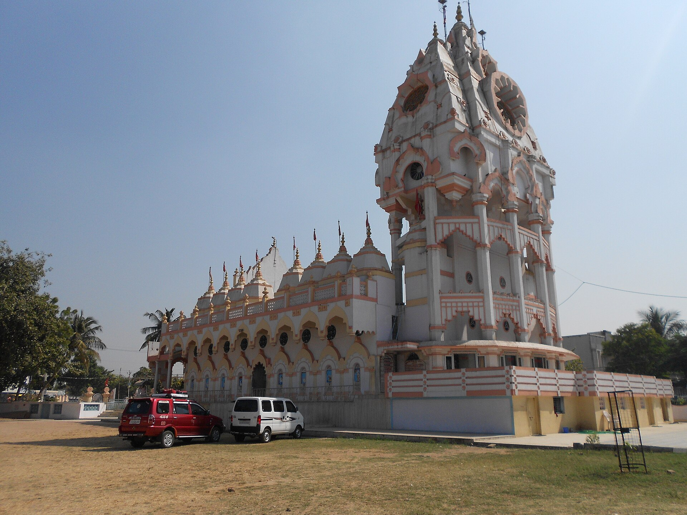
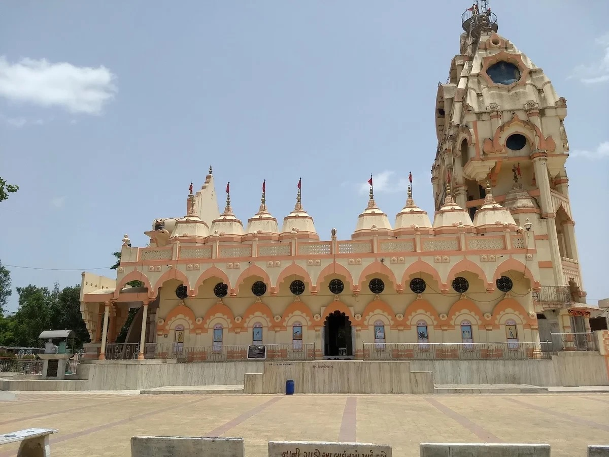
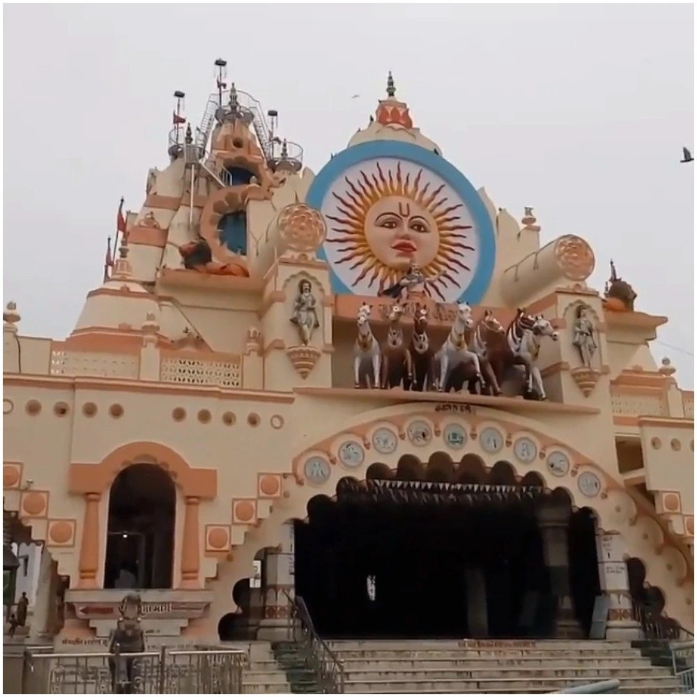
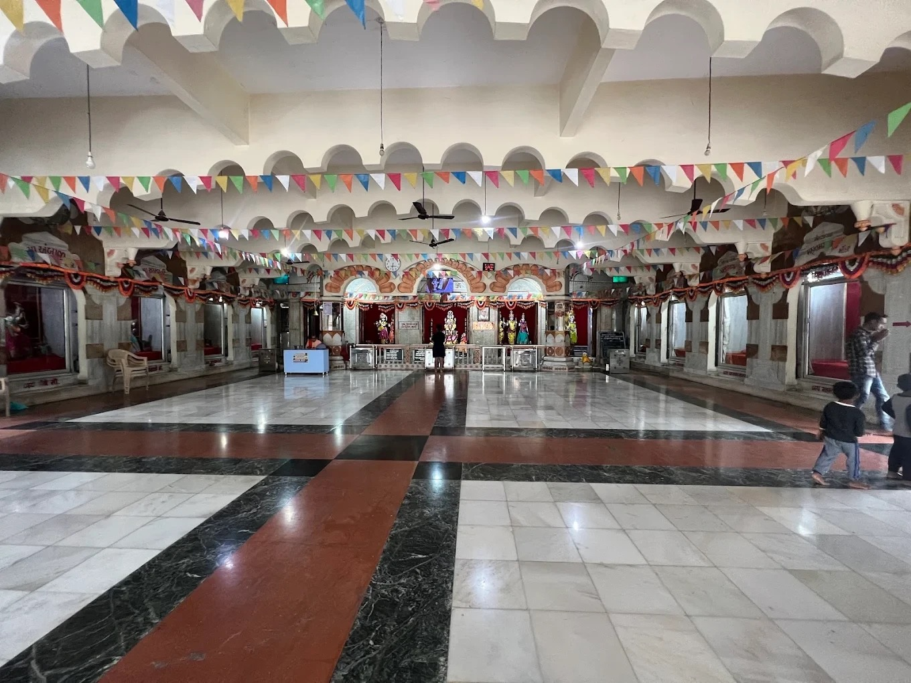
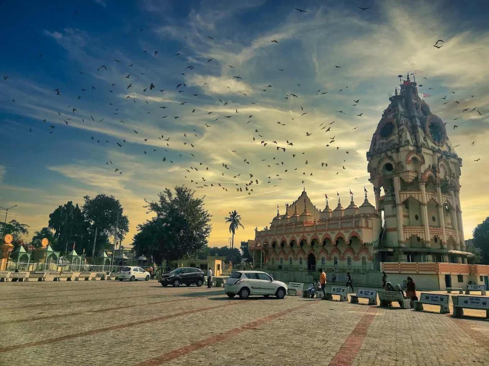
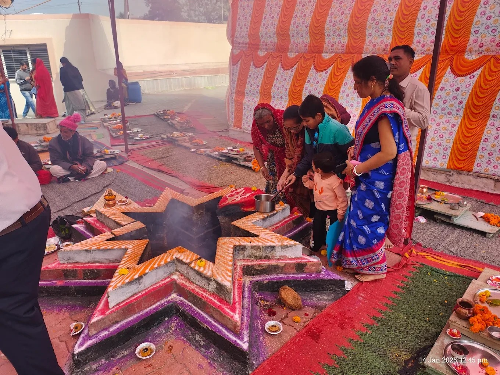
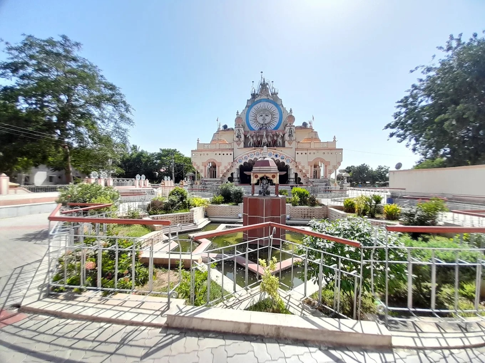
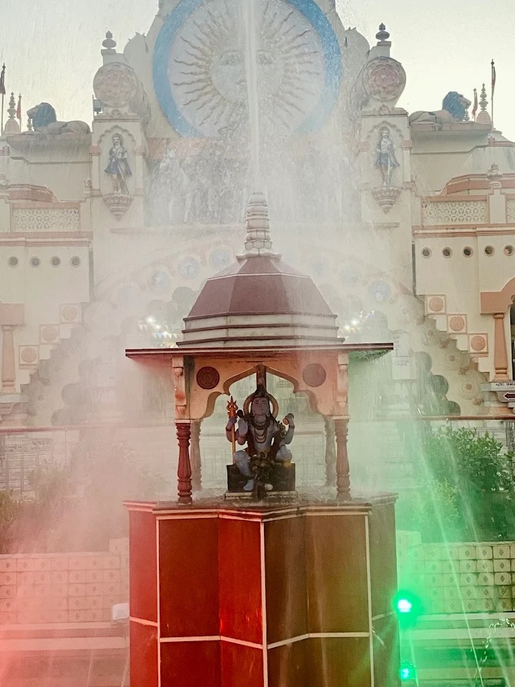
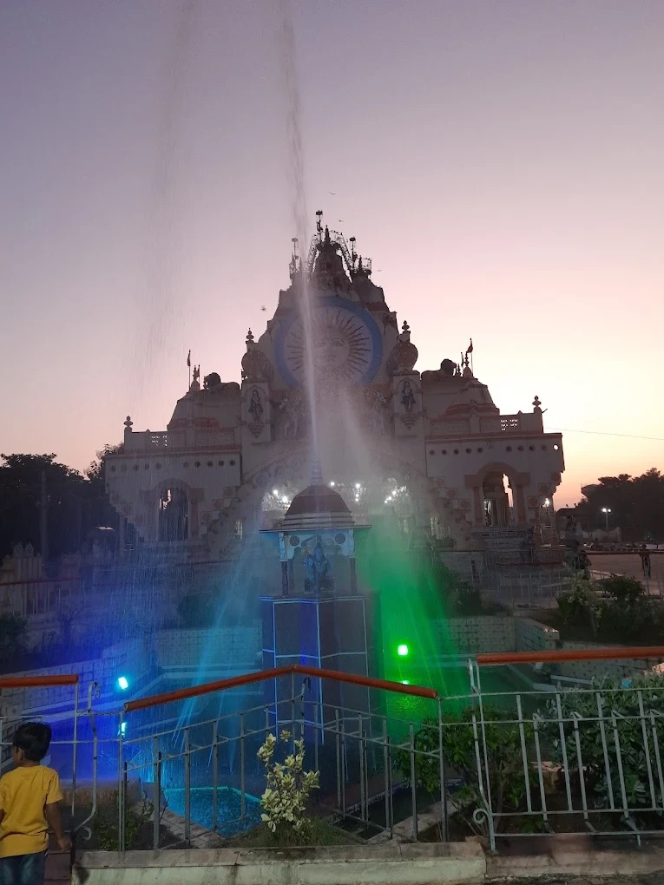
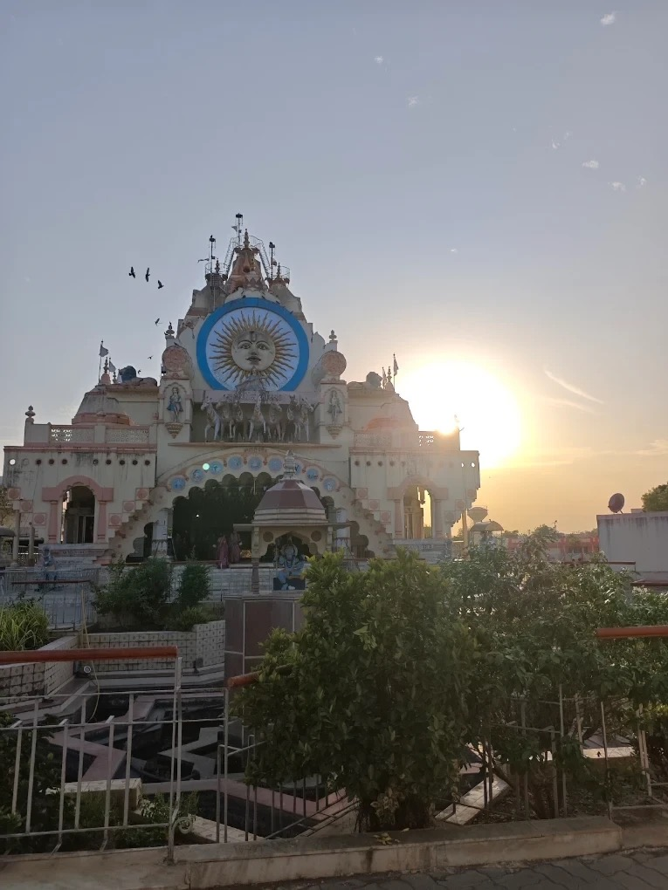
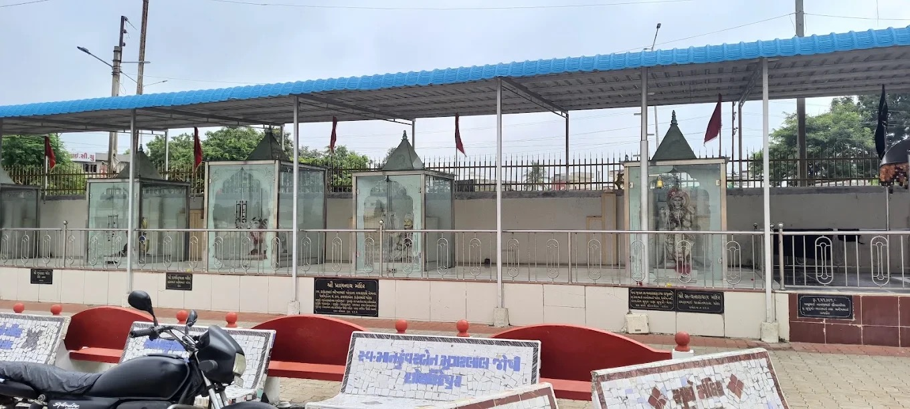
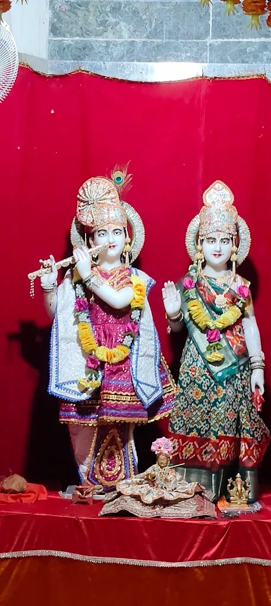
Photo 1: © Moulin Apte, Wikimedia Commons (CC BY-SA 3.0). Photos 2–12: visitor-contributed.
Video by LcTravelers on YouTube